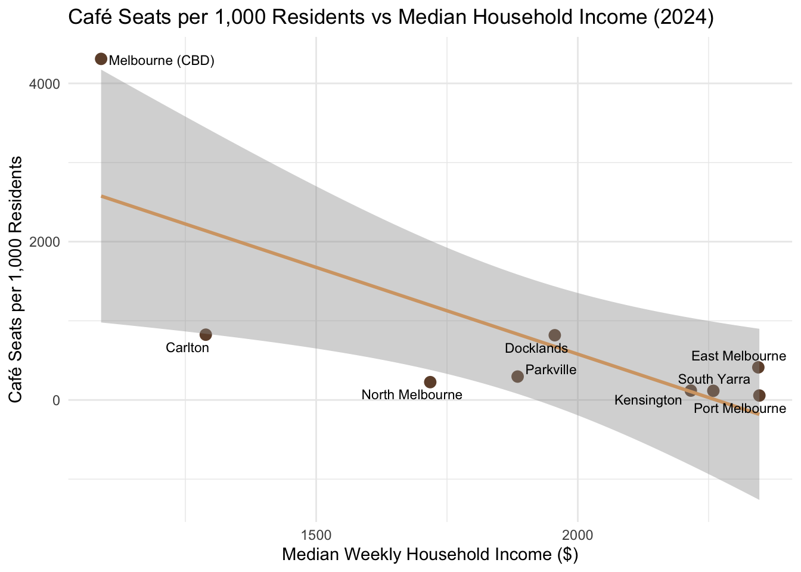

Show code
library(tidyverse)
library(here)
library(sf)
library(readxl)library(tidyverse)
library(here)
library(sf)
library(readxl)# Load raw CLUE café data
clue_raw <- read_csv(here("data/raw/cafes-and-restaurants-with-seating-capacity.csv"))
# Inspect
glimpse(clue_raw)Rows: 66,356
Columns: 15
$ `Census year` <dbl> 2014, 2014, 2014, 2014, 2014, 2014, 2…
$ `Block ID` <dbl> 68, 68, 72, 72, 72, 72, 72, 72, 72, 7…
$ `Property ID` <dbl> 107766, 108989, 105375, 105375, 10572…
$ `Base property ID` <dbl> 107766, 108989, 105375, 105375, 10572…
$ `Building address` <chr> "22 Punch Lane MELBOURNE 3000", "199-…
$ `CLUE small area` <chr> "Melbourne (CBD)", "Melbourne (CBD)",…
$ `Trading name` <chr> "Lucattini's Italian Restaurant", "Hu…
$ `Business address` <chr> "Ground , 22 Punch Lane MELBOURNE 300…
$ `Industry (ANZSIC4) code` <dbl> 4511, 4511, 4511, 4511, 4511, 4511, 4…
$ `Industry (ANZSIC4) description` <chr> "Cafes and Restaurants", "Cafes and R…
$ `Seating type` <chr> "Seats - Indoor", "Seats - Indoor", "…
$ `Number of seats` <dbl> 54, 31, 30, 30, 30, 20, 12, 120, 24, …
$ Longitude <dbl> 144.9711, 144.9721, 144.9548, 144.954…
$ Latitude <dbl> -37.81036, -37.81013, -37.81350, -37.…
$ location <chr> "-37.81036225, 144.9710753", "-37.810…unique(clue_raw$`Census year`) |> sort() [1] 2002 2003 2004 2005 2006 2007 2008 2009 2010 2011 2012 2013 2014 2015 2016
[16] 2017 2018 2019 2020 2021 2022 2023 2024unique(clue_raw$`Industry (ANZSIC4) description`) [1] "Cafes and Restaurants"
[2] "Pubs, Taverns and Bars"
[3] "Takeaway Food Services"
[4] "Bakery Product Manufacturing (Non-factory based)"
[5] "Other Specialised Food Retailing"
[6] "Accommodation"
[7] "Sports and Physical Recreation Venues, Grounds and Facilities Operation"
[8] "Catering Services"
[9] "Automotive Body, Paint and Interior Repair"
[10] "Other Gambling Activities"
[11] "Houseware Retailing"
[12] "Zoological and Botanical Gardens Operation"
[13] "Clubs (Hospitality)"
[14] "Other Store-Based Retailing n.e.c."
[15] "Internet Service Providers and Web Search Portals"
[16] "Performing Arts Venue Operation"
[17] "Supermarket and Grocery Stores"
[18] "Non-Residential Property Operators"
[19] "Other Administrative Services n.e.c."
[20] "Performing Arts Operation"
[21] "Laundry and Dry-Cleaning Services"
[22] "Religious Services"
[23] "Sports and Physical Recreation Clubs and Sports Professionals"
[24] "Other Personal Services n.e.c."
[25] "Amusement and Other Recreational Activities n.e.c."
[26] "Car Retailing"
[27] "Fruit and Vegetable Retailing"
[28] "Casino Operation"
[29] "Convenience Store"
[30] "Womens Clothing Retailing"
[31] "Other Interest Group Services n.e.c."
[32] "Diet and Weight Reduction Centre Operation"
[33] "Hairdressing and Beauty Services"
[34] "Motor Cycle Retailing"
[35] "Technical and Vocational Education and Training"
[36] "Horse and Dog Racing Administration and Track Operation"
[37] "Oil and Gas Extraction"
[38] "Other Social Assistance Services"
[39] "Sport and Camping Equipment Retailing"
[40] "Newspaper and Book Retailing"
[41] "Architectural Services"
[42] "Banking"
[43] "Liquor Retailing"
[44] "Entertainment Media Retailing"
[45] "Other Food Product Manufacturing n.e.c."
[46] "Amusement Parks and Centres Operation"
[47] "Clothing Retailing"
[48] "Museum Operation"
[49] "Telecommunication Goods Wholesaling"
[50] "Health and Fitness Centres and Gymnasia Operation"
[51] "Fresh Meat, Fish and Poultry Retailing"
[52] "Hospitals (except Psychiatric Hospitals)"
[53] "Business and Professional Association Services"
[54] "Scientific Research Services"
[55] "Fuel Retailing"
[56] "Pharmaceutical, Cosmetic and Toiletry Goods Retailing"
[57] "Flower Retailing"
[58] "Motion Picture Exhibition"
[59] "Mens Clothing Retailing"
[60] "Watch and Jewellery Retailing"
[61] "Electricity Transmission"
[62] "Other Auxiliary Finance and Investment Services"
[63] "Other Personal Accessory Retailing"
[64] "Computer System Design and Related Services"
[65] "Fruit and Vegetable Wholesaling"
[66] "Professional Photographic Services"
[67] "Higher Education"
[68] "Common Area"
[69] "Furniture Retailing"
[70] "Sports and Physical Recreation Instruction"
[71] "Management Advice and Other Consulting Services"
[72] "Electronic (except Domestic Appliance) and Precision Equipment Repair and Maint"
[73] "Cereal, Pasta and Baking Mix Manufacturing" cafes <- clue_raw |>
filter(`Industry (ANZSIC4) description` == "Cafes and Restaurants")
# Quick check
nrow(cafes)[1] 49749# Save filtered data
write_csv(cafes, here("data/raw/cafes_filtered.csv"))growth_total <- cafes |>
group_by(`Census year`) |>
summarise(
n_cafes = n_distinct(paste(`Trading name`, `Business address`)),
total_seats = sum(`Number of seats`, na.rm = TRUE),
.groups = "drop"
)
# Line chart: total seats over time
ggplot(growth_total, aes(x = `Census year`, y = total_seats)) +
geom_line(colour = "#6F4E37", linewidth = 1) +
geom_point(colour = "#6F4E37", size = 2) +
scale_x_continuous(breaks = seq(2002, 2024, by = 2)) +
labs(title = "Total Café Seating Capacity in Melbourne (2002–2024)",
x = "Year", y = "Total Seats") +
theme_minimal()
library(patchwork)
cafe_2002_sf <- cafes |>
filter(`Census year` == 2002) |>
filter(!is.na(Longitude), !is.na(Latitude)) |>
st_as_sf(coords = c("Longitude", "Latitude"), crs = 4326)
cafe_2024_sf <- cafes |>
filter(`Census year` == 2024) |>
filter(!is.na(Longitude), !is.na(Latitude)) |>
st_as_sf(coords = c("Longitude", "Latitude"), crs = 4326)
p2002 <- ggplot(cafe_2002_sf) +
geom_sf(aes(size = `Number of seats`), alpha = 0.4, colour = "#6F4E37") +
labs(title = "2002", size = "Seats") +
theme_void() +
theme(legend.position = "none")
p2024 <- ggplot(cafe_2024_sf) +
geom_sf(aes(size = `Number of seats`), alpha = 0.4, colour = "#6F4E37") +
labs(title = "2024", size = "Seats") +
theme_void()
p2002 + p2024 +
plot_annotation(title = "Café Seating Capacity Across Melbourne: 2002 vs 2024")
suburb_2024 <- cafes |>
filter(`Census year` == 2024) |>
group_by(`CLUE small area`) |>
summarise(total_seats = sum(`Number of seats`, na.rm = TRUE),
.groups = "drop") |>
arrange(desc(total_seats))
ggplot(suburb_2024, aes(x = reorder(`CLUE small area`, total_seats),
y = total_seats)) +
geom_col(fill = "#6F4E37") +
coord_flip() +
labs(title = "Total Café Seating by Suburb (2024)",
x = NULL, y = "Total Seats") +
theme_minimal()
covid_period <- cafes |>
filter(`Census year` >= 2018) |>
group_by(`Census year`, `Seating type`) |>
summarise(total_seats = sum(`Number of seats`, na.rm = TRUE),
.groups = "drop")
ggplot(covid_period, aes(x = `Census year`, y = total_seats,
colour = `Seating type`)) +
geom_line(linewidth = 1) +
geom_point(size = 2) +
geom_vline(xintercept = 2020, linetype = "dashed", colour = "red") +
annotate("text", x = 2020.2, y = max(covid_period$total_seats) * 0.95,
label = "COVID-19", hjust = 0, colour = "red", size = 3.5) +
scale_colour_manual(values = c("Seats - Indoor" = "#6F4E37",
"Seats - Outdoor" = "#D4A574")) +
scale_x_continuous(breaks = 2018:2024) +
labs(title = "Indoor vs Outdoor Café Seating Before and After COVID-19",
x = "Year", y = "Total Seats", colour = "Seating Type") +
theme_minimal()
# SA2 lookup
sa2_lookup <- read_excel(
here("data/raw/Metadata/2021Census_geog_desc_1st_2nd_3rd_release.xlsx"),
sheet = "2021_ASGS_MAIN_Structures"
) |>
filter(ASGS_Structure == "SA2") |>
select(SA2_CODE_2021 = Census_Code_2021,
SA2_NAME_2021 = Census_Name_2021)
# Income data
g02 <- read_csv(here("data/raw/2021Census_G02_VIC_SA2.csv")) |>
select(SA2_CODE_2021,
median_weekly_income = Median_tot_hhd_inc_weekly) |>
mutate(SA2_CODE_2021 = as.character(SA2_CODE_2021))
# Population data
g01 <- read_csv(here("data/raw/2021Census_G01_VIC_SA2.csv")) |>
select(SA2_CODE_2021, population = Tot_P_P) |>
mutate(SA2_CODE_2021 = as.character(SA2_CODE_2021))
# Join both to SA2 names
abs_data <- g02 |>
left_join(g01, by = "SA2_CODE_2021") |>
left_join(sa2_lookup, by = "SA2_CODE_2021") |>
select(suburb = SA2_NAME_2021, median_weekly_income, population)
# Manual suburb name mapping
name_mapping <- tribble(
~clue_name, ~abs_name,
"Melbourne (CBD)", "Melbourne CBD - North",
"Carlton", "Carlton",
"Docklands", "Docklands",
"East Melbourne", "East Melbourne",
"Kensington", "Kensington (Vic.)",
"North Melbourne", "North Melbourne",
"Parkville", "Parkville",
"Southbank", "Southbank",
"South Yarra", "South Yarra - West",
"Port Melbourne", "Port Melbourne",
"West Melbourne (Industrial)", "West Melbourne",
"West Melbourne (Residential)", "West Melbourne"
)
# Join seating data with ABS data
equity_data <- suburb_2024 |>
left_join(name_mapping, by = c("CLUE small area" = "clue_name")) |>
left_join(abs_data, by = c("abs_name" = "suburb")) |>
filter(!is.na(median_weekly_income)) |>
mutate(seats_per_1000 = (total_seats / population) * 1000)
# Scatter plot: seats per 1000 residents vs median income
ggplot(equity_data, aes(x = median_weekly_income, y = seats_per_1000,
label = `CLUE small area`)) +
geom_point(colour = "#6F4E37", size = 3) +
geom_smooth(method = "lm", se = TRUE, colour = "#D4A574") +
ggrepel::geom_text_repel(size = 3) +
labs(title = "Café Seats per 1,000 Residents vs Median Household Income (2024)",
x = "Median Weekly Household Income ($)",
y = "Café Seats per 1,000 Residents") +
theme_minimal()
model <- lm(seats_per_1000 ~ median_weekly_income, data = equity_data)
summary(model)
Call:
lm(formula = seats_per_1000 ~ median_weekly_income, data = equity_data)
Residuals:
Min 1Q Median 3Q Max
-1313.0 -535.4 104.6 238.0 1733.0
Coefficients:
Estimate Std. Error t value Pr(>|t|)
(Intercept) 4963.7971 1431.3903 3.468 0.0104 *
median_weekly_income -2.1924 0.7343 -2.986 0.0204 *
---
Signif. codes: 0 '***' 0.001 '**' 0.01 '*' 0.05 '.' 0.1 ' ' 1
Residual standard error: 955.7 on 7 degrees of freedom
Multiple R-squared: 0.5601, Adjusted R-squared: 0.4973
F-statistic: 8.914 on 1 and 7 DF, p-value: 0.02035